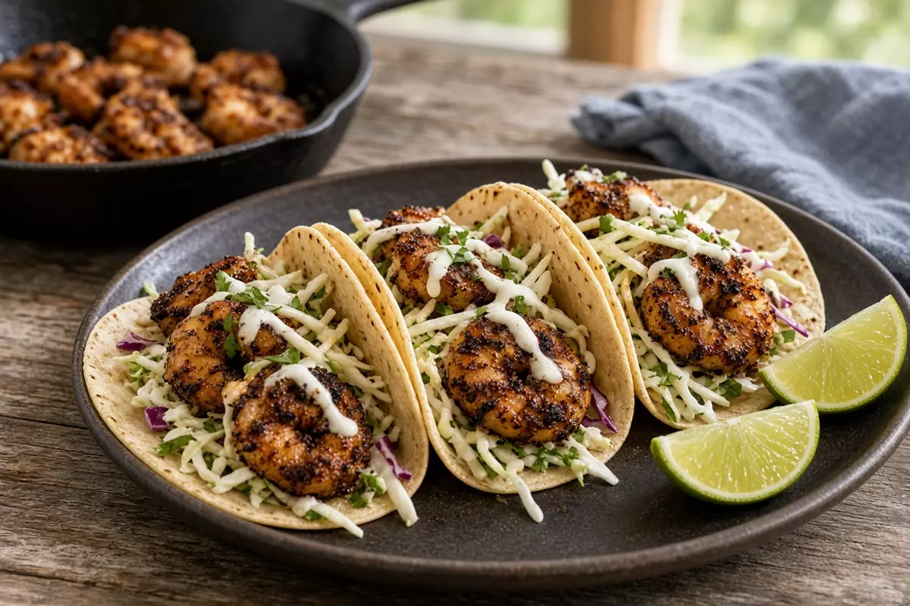

Blackened Shrimp Tacos
Cast-iron blackened shrimp with a cabbage-apple slaw and lime crema. Weeknight tacos in about 25 minutes.

4 servings
By
Yield: 4 servings
Prep:
Cook:
Total:
Ingredients
- 1 1/2 pounds large shrimp, peeled and deveined
- 1 tablespoon avocado oil
- 1 teaspoon smoked paprika
- 1 teaspoon garlic powder
- 1/2 teaspoon onion powder
- 1/2 teaspoon dried thyme
- 3/4 teaspoon kosher salt, divided
- 1/4 teaspoon cayenne
- 1/4 teaspoon black pepper
- 3 cups shredded green cabbage
- 1 small apple, cut into thin matchsticks
- 2 tablespoons apple cider vinegar
- 1 tablespoon honey
- 1/2 cup sour cream
- 1 lime, zest and juice
- 8 small flour or corn tortillas
- 2 tablespoons chopped cilantro, optional
Instructions
- Toss cabbage and apple with vinegar, honey, and 1/4 teaspoon salt. Let it sit while the shrimp cooks.
- Stir sour cream with lime zest, lime juice, and a pinch of salt.
- Pat the shrimp dry. Toss with avocado oil, paprika, garlic powder, onion powder, thyme, remaining 1/2 teaspoon salt, cayenne, and black pepper.
- Heat a cast-iron skillet over medium-high heat. Sear shrimp in a single layer, 1 1/2 to 2 minutes per side, until just opaque. Work in batches so they blacken instead of steam.
- Warm the tortillas in a dry skillet about 20 seconds per side. Fill with slaw, shrimp, lime crema, and cilantro if using.